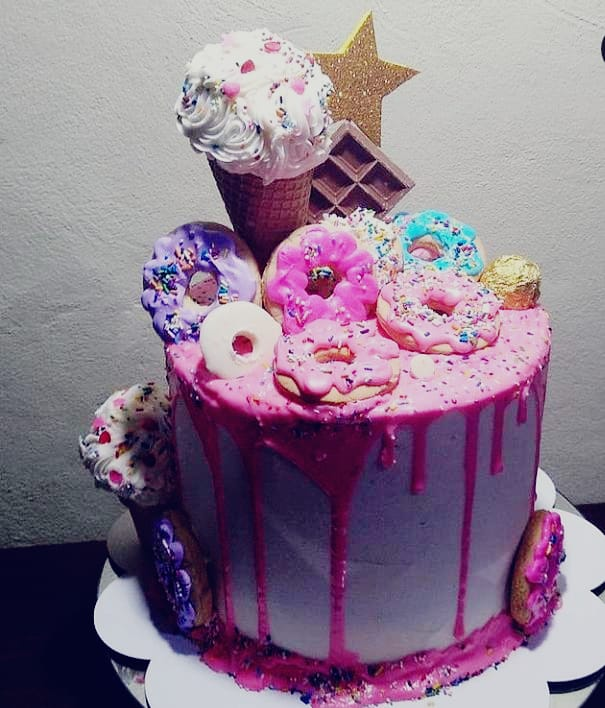
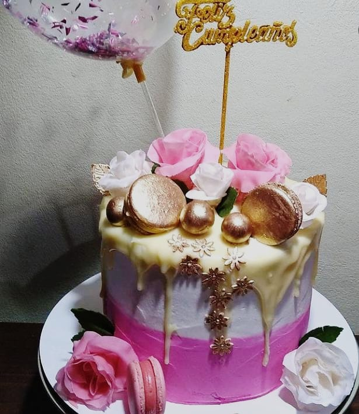
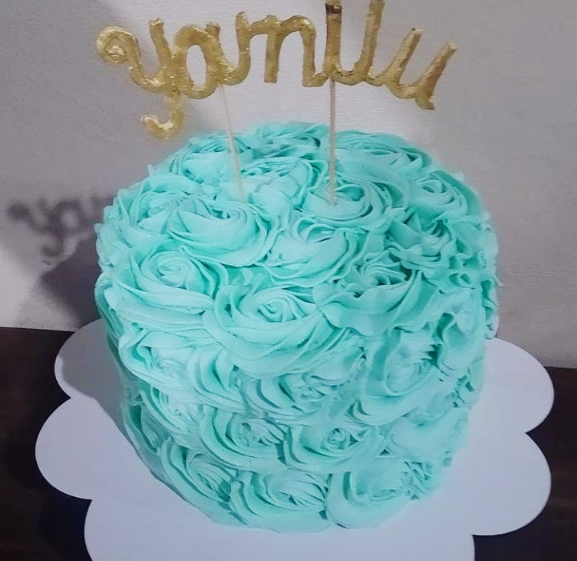

UN POCO SOBRE NOSOTROS...
Somos una pymes que usamos productos de primera calidad, en nuestras elaboraciones podran observar el sabor del compromiso y calidad. Sabemos que la torta de cumpleaños o un buen desayuno personalizado para regalar o regalarse es de suma importancia el sabor, por eso es que asumimos este compromiso de calidad con nuestros clientes de siempre y los nuevos que nos eligen productos por primera vez.
  